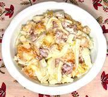

|
Fennel SaladGermany - Fenchelsalat | ||||
| Makes: Effort: Sched: DoAhead: |
6 salad ** 3-1/2 hrs Best |
An example of the new German cuisine which is becoming lighter and more varied as German chefs gain experience in other lands, then apply it at home. | |||
|
12 4 2 8 ------- 3 1-3/4 2 2 3/4 1/4 ------ |
oz oz # oz --- T c T t t t --- |
Fennel (1) Walnuts Oranges, Navel Emmentaler Cheese -- Dressing Lemon Juice Yogurt, plain Olive Oil, virgin Sugar Salt Pepper, black ------------- |
Make: - (3-1/2 hrs, 25 min work)
|